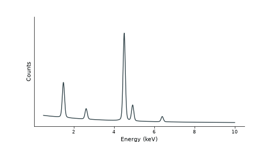

Spectra
XRF
Elements, and how much of each.
Steps
Load XRF Spectrum/Spectra...Load spectra: the element lines are labelled.Load XRF Results (.txt)...Load the quantified results from the instrument.Plot ComparisonCompare samples, for example before and after etching.Compute % DifferencePercent difference shows what was removed: Al should drop after etching.
How it works

Worked example
Ti3AlC2 is 13.9 wt% Al. After HF, Al at 0.8 wt% means about 94 % of it was etched out.